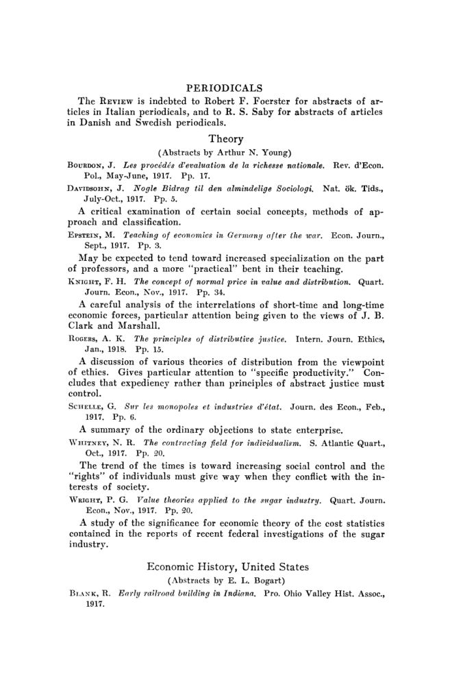

O mercado da Califórnia, o trigo de Hoover e a fábula de Mandeville
Leitura: 14 min
Plehn acompanha a comissão de mercados da Califórnia, Tosdal o preço de revenda, Whitney os saques a descoberto, Duffus o controle do trigo e Patten o financiamento da guerra por títulos.


Em 1915, o produtor californiano de pêssego seco recebeu 2,5 centavos de dólar por libra-peso. Carl C. Plehn, da University of California, abre a American Economic Review de março de 1918 com a conta que daí resulta: de cada dólar pago pelo consumidor, 15 centavos chegavam ao produtor; os outros 85 ficavam com embaladores, comissários, atacadistas, varejistas e ferrovias. A pergunta dele é se essa divisão justifica a intervenção do governo.
A edição, a primeira do volume VIII, sai no primeiro inverno dos Estados Unidos na guerra, e quase todos os artigos tratam de mercados sob algum tipo de direção pública. Plehn descreve a comissão estadual de mercados da Califórnia; H. R. Tosdal, da Boston University, o debate sobre o preço de revenda fixado pelo fabricante; Nathaniel R. Whitney, da State University of Iowa, o hábito dos bancos de deixar o cliente sacar além do saldo; William M. Duffus, da University of Kansas, a lei de 10 de agosto de 1917 que pôs o comércio de trigo sob controle federal; e Simon N. Patten discute com J. H. Hollander e E. R. A. Seligman se a guerra deve ser paga com títulos ou com impostos. Completam o número as resenhas, a lista de livros novos, documentos oficiais, resumos de periódicos e as notas da associação.
Pode o Estado organizar um mercado sem mandar nele?
Carl C. Plehn (University of California) · “The State Market Commission of California” · pp. 1–27
Plehn começa pelas causas do custo alto. Os produtores são muitos e pequenos. Até a colheita, a fruticultura obedece aos rendimentos decrescentes, e o pomar de 40 a 100 acres cuidado pelo dono produz mais barato; depois dela, colher, embalar, transportar e vender ficam mais baratos em grande escala. Os produtos são perecíveis e os mercados estão longe: os primeiros centros de porte ficam a cerca de 1.000 milhas, a costa atlântica a 3.000. O “packer”, termo local para embaladores e intermediários em geral, presta um serviço necessário, e o produtor se sente à mercê dele.
A vantagem da cooperativa, diz o autor, vem de uma só fonte: o trabalho não pago ou mal pago dos próprios associados. Em 1915, a legislatura criou um “mercado de comissão” estadual; o primeiro diretor, Harris Weinstock, montou em seu lugar uma comissão de mercado, depois confirmada pela lei de 1917. O diretor não tem poder de mando. Obteve do Departamento de Justiça um parecer de que cooperativas agrícolas podiam se formar sem violar as leis antitruste e passou a organizar produtores. A associação do pêssego seco reuniu 45.750 dos cerca de 50 mil acres do estado, e o preço ao produtor subiu de 2,5 para 6 centavos no primeiro ano, sem alta no varejo de Nova York.
O peixe é a exceção. A State Fish Exchange Act, de 1917, deu ao diretor o poder de fixar preços máximos de varejo. Toda tarde um agente apura a pesca do dia e as sobras dos comerciantes; fixa-se então o preço que deve escoar o estoque, publicado nos jornais da manhã. Escalas negociadas repartem o preço entre pescador, atacadista e varejista conforme as perdas de limpeza de cada espécie.
“A cooperação não é uma varinha mágica que cria algo do nada.” (“Cooperation is not a magic wand which creates something out of nothing.”)
Plehn conclui que os ganhos poderiam ter vindo da iniciativa privada, mas que o diretor tem função permanente: inspirar confiança, aproximar facções e certificar padrões. As cooperativas só sobrevivem com monopólio substancial; até ali, a evidência apontava pequena queda de preços ao consumidor e serviço melhor. O êxito do peixe, admite, deve algo às condições extraordinárias da guerra.
Quem quer fixar o preço de revenda, e o que dizem os tribunais?
H. R. Tosdal (Boston University, College of Business Administration) · “Price Maintenance” · pp. 28–47
Manter o preço de revenda é a política pela qual o fabricante de um artigo identificado por marca, patente ou direito autoral impõe ao revendedor o preço a cobrar do consumidor. Tosdal se apoia sobretudo nas audiências da Comissão de Comércio Interestadual e Exterior da Câmara entre 1914 e 1917 e liga a prática à publicidade nacional: o fabricante que cria demanda diretamente no consumidor quer ficar semi-independente dos intermediários e impedir que seu produto vire chamariz de preço cortado.
A história mais nítida vem do comércio de livros. Por volta de 1900, editores e livreiros adotaram o preço líquido, com boicote a quem desse desconto. A loja Macy's cortou preços, foi boicoteada e recorreu à Justiça em 1903; uma década depois venceu, com as combinações julgadas contrárias à Lei Sherman. A American Publishers Association se dissolveu no outono de 1914.
O alinhamento de interesses não segue classes. Fabricantes de artigos anunciados nacionalmente e as revistas de circulação nacional apoiam a legalização, organizados na American Fair Trade League; lojas de departamentos, redes e casas de venda por catálogo tendem a se opor; os varejistas independentes se dividem e os atacadistas ficam à margem. A American Federation of Labor e a federação de clubes femininos registraram oposição.
Na Justiça, resume o autor, combinações de fabricantes para manter preços violam a Lei Sherman; a simples nota afixada ao artigo protegido não obriga o revendedor, como decidiu a Suprema Corte no caso Macy, em 1908, e no caso Sanatogen, em 1913, por cinco votos a quatro; os contratos recebem tratamento desigual; e a recusa de venda ao revendedor que corta preço ainda aguardava julgamento.
Diante da incerteza judicial, os defensores da prática passaram a buscar a lei. Tosdal prevê que a decisão sobre o corte de preço como concorrência desleal dependerá do saldo de vantagens para o público e que surgirá, caso a caso, uma classificação entre formas permitidas e proibidas.
Por que os bancos de Iowa deixavam o cliente sacar a descoberto?
Nathaniel R. Whitney (State University of Iowa) · “The Overdraft Evil as Illustrated by Conditions in Iowa Banks” · pp. 48–61
Whitney trata o saque a descoberto como resquício das práticas bancárias anteriores ao sistema de bancos nacionais. O Comptroller of the Currency vinha pedindo sua redução, e nos bancos nacionais o total caiu de cerca de US$ 27,5 milhões em 1913 para US$ 7,8 milhões em setembro de 1916. Os números declarados subestimam o problema: muitos bancos guardam entre os itens de caixa cheques que, lançados, deixariam a conta negativa.
A explicação habitual, a de que o agricultor saca mais que os outros, não se confirma. Dos dez banqueiros consultados, quatro dizem que comerciantes e industriais sacam a descoberto com mais frequência, dois não veem diferença e quatro apontam o agricultor. A causa, para Whitney, é a distribuição da população: dos 893 municípios incorporados de Iowa, 685 tinham menos de mil habitantes, e é difícil ao caixa da cidade pequena devolver o cheque de um vizinho. Os bancos de poupança por ações, que podiam abrir com US$ 10 mil de capital, concentram a maior parte dos saldos negativos.
A segunda causa é a concorrência: um banco para cada 1.455 habitantes, quase dois por município. Larrabee, com 192 moradores, tinha dois. Um banqueiro relatou caixas de bancos pequenos distribuindo talões de cheque, em leilões de gado e equipamento, a compradores sem conta, para conquistar o cliente.
O saque a descoberto é um empréstimo irregular, muitas vezes não autorizado e sem garantia, que tira do banqueiro o controle das reservas. Whitney apoia a lei proposta pela American Bankers Association, que faria do cheque sem fundos prova presumida de intenção de fraude, e lista outras penalidades possíveis. Elevar o capital mínimo reduziria a concorrência, mas ele duvida que poucos bancos grandes sirvam melhor uma população dispersa.
O que a lei de alimentos de 1917 deu ao governo sobre o trigo?
William M. Duffus (University of Kansas) · “Government Control of the Wheat Trade in the United States” · pp. 62–87
A lei de controle de alimentos e combustíveis, sancionada em 10 de agosto de 1917, autorizou o presidente a licenciar comerciantes, punir o açambarcamento, requisitar estoques e fábricas, comprar e vender trigo e farinha, regular ou proibir operações nas bolsas e garantir preços ao produtor. Duffus, que escreve em dezembro de 1917, observa na abertura que poucos economistas teriam defendido a lei tal como foi aprovada e propõe examinar a teoria em que ela se apoia.
O contexto vem em oito condições. A guerra fora declarada em 6 de abril. A safra de 1916 fora curta, a de 1917 também prometia sê-lo, e a demanda europeia era grande. Os preços dos alimentos subiam, e os consumidores exigiam ação contra intermediários e especuladores. Os agricultores temiam plantar mais e ver o preço cair com a paz; parte deles combatia havia anos as bolsas de grãos; e os governos europeus já controlavam os alimentos.
Duffus agrupa os poderes da lei em nove e examina a justificativa de cada um. Punir desperdício e monopólio repetia direito existente. A autoridade para comprar e vender trigo veio do secretário da Agricultura, Houston, e de Herbert Hoover, para quem um preço máximo só funciona quando o governo controla parte do estoque. O controle das bolsas aparece justificado pela guerra, sem que se explicasse a diferença entre especulação útil e especulação “prejudicial”.
Hoover defendia um preço fixo para cada etapa, do grão à farinha, baseado no custo de produção, e negava que preços altos fossem bons racionadores, porque cortariam o consumo dos mais pobres. Para a safra de 1918, a lei garantiu ao produtor um mínimo de US$ 2 por bushel. Duffus considera essa garantia uma das partes menos vulneráveis da lei, desde que fixada a tempo de estimular o plantio.
Comprar um título de guerra torna a nação mais rica?
Simon N. Patten · “Mandeville in the Twentieth Century” · pp. 88–98
Patten parte de Mandeville, cuja Fábula das Abelhas, diz ele, abriu a série de debates que terminou na Riqueza das Nações. A tese refutada de que gastar faz bem ao comércio reaparece a cada crise; em 1918, na ideia de que a despesa de guerra e os títulos públicos enriquecem a nação. O exemplo é um poema de propaganda dos Liberty Bonds em que um título de cem dólares passa de mão em mão, quitando dívidas, e volta ao comprador original.
“Exaltamos o título e evitamos o imposto.” (“We extol the bond and avoid the tax.”)
O alvo são os economistas. Contra Hollander, que atribuíra a Pigou, em 1916, a resistência ao financiamento por dívida, Patten cita Thomas Chalmers, que em 1808 já defendia tributar até o limite das necessidades públicas. Define inflação como uma superestimação do poder presente de consumir: alta de preços sem alta correspondente dos custos físicos de produção. Não encontra sinal de que os americanos tenham reduzido o consumo.
Contra Seligman, sustenta que o custo da guerra cai sobre o presente: adiar a reposição do capital ou esgotar o trabalhador aumenta o ônus atual. O crédito legítimo é de curto prazo, ligado ao intervalo entre produção e consumo; títulos de longo prazo prendem o dinheiro do consumidor.
A conta do autor é direta: o ônus da guerra é o excesso do gasto público sobre o excedente nacional, e o consumo deve cair na mesma medida, com a poupança entregue ao governo por impostos. Pela via dos títulos, o governo deixa os preços subirem, toma emprestado de quem lucrou com a alta, e a guerra é paga três vezes: pelo consumidor, pelo capitalista e, no vencimento, outra vez. Patten pede ainda juros maiores, já que 4% seriam demais como bônus a quem lucra com a guerra e pouco para despertar a poupança.
O que mais há na edição?
As resenhas incluem o segundo volume dos Economic Annals of the Nineteenth Century, de William Smart, por Clive Day; History of Commerce and Industry, de Cheesman A. Herrick, por Abbott Payson Usher; o estudo de Frederick Merk sobre a economia de Wisconsin na década da Guerra Civil, por C. O. Ruggles; Middlemen in English Business, de Ray Bert Westerfield, por W. T. Jackman; o levantamento de Arthur W. Ashby sobre pequenas propriedades em Oxfordshire, por Richard T. Ely; a história dos transportes antes de 1860 coordenada por Balthasar Henry Meyer, por Isaac Lippincott; Modern Currency Reforms, de E. W. Kemmerer, por E. M. Patterson; The Value of Money, de B. M. Anderson Jr., por William A. Scott; os ensaios de Joseph Stancliffe Davis sobre as primeiras sociedades anônimas americanas, por Maurice H. Robinson; e três obras sobre população resenhadas por A. B. Wolfe. Nas notas, o comitê executivo escolhe Cleveland para a reunião seguinte e cria comissões sobre transportes, trabalho e controle de preços.
Na minha leitura
Na minha leitura, o número de março de 1918 é um estudo comparado de mecanismos de preço. Plehn mede quanto do dólar do consumidor chega ao produtor e o que muda quando um órgão público reúne a informação dispersa; Tosdal mapeia quem ganha com o preço uniforme de revenda e como o direito trata cada forma de impô-lo; Whitney usa a comparação entre estados e entre tipos de banco para separar a explicação pelo tipo de cliente da explicação pela estrutura do mercado.
Duffus e Patten tratam do mesmo problema em escala nacional: o que acontece quando a guerra rompe o sinal de preço. Duffus reconstrói os argumentos de cada poder dado ao governo e aponta onde faltou distinguir o que se queria regular; Patten usa os preços agrícolas para testar a afirmação de que os títulos não causam inflação. Em todos os casos, a pergunta de fundo é quem produz a informação que o preço deveria transmitir.
Glossário
- Cooperativa de comercialização
- associação de produtores que embala, transporta e vende a produção dos membros, repartindo custos e resultados.
- Manutenção do preço de revenda
- prática pela qual o fabricante fixa o preço que atacadistas e varejistas devem cobrar por seu produto.
- Saque a descoberto (overdraft)
- pagamento de cheque além do saldo da conta, que funciona como empréstimo sem contrato.
- Contrato futuro
- compromisso de comprar ou vender uma mercadoria numa data futura a preço fixado hoje, negociado em bolsa.
- Açambarcamento
- retenção de estoques além das necessidades normais para lucrar com a alta de preços.
- Preço mínimo garantido
- preço que o governo se compromete a assegurar ao produtor, comprando a produção se necessário.
- Bushel
- medida de volume de grãos usada nos Estados Unidos, cerca de 27 kg no caso do trigo.
- Inflação, em Patten
- alta de preços sem alta correspondente dos custos físicos de produção.
Artigos (5)
- The State Market Commission of California — Carl C. Plehn (University of California) (pp. 1–27) · resenha acima · JSTOR
- Price Maintenance — H. R. Tosdal (Boston University, College of Business Administration) (pp. 28–47) · resenha acima · JSTOR
- The Overdraft Evil as Illustrated by Conditions in Iowa Banks — Nathaniel R. Whitney (State University of Iowa) (pp. 48–61) · resenha acima · JSTOR
- Government Control of the Wheat Trade in the United States — William M. Duffus (University of Kansas) (pp. 62–87) · resenha acima · comentário completo · JSTOR
- Mandeville in the Twentieth Century — Simon N. Patten (pp. 88–98) · resenha acima · comentário completo · JSTOR
Resenhas (22)
- William Smart, Economic Annals of the Nineteenth Century, vol. II, 1821–1830 — Clive Day (Yale University) (pp. 100–101). Segundo volume dos anais econômicos britânicos de Smart, compilados a partir dos debates parlamentares. JSTOR
- Cheesman A. Herrick, History of Commerce and Industry — Abbott Payson Usher (pp. 101–103). Manual de história do comércio e da indústria. JSTOR
- Mary Alice Hanna, Trade of the Delaware District before the Revolution — Charles M. Andrews (Yale University) (pp. 104–105). Estudo do comércio colonial da região do rio Delaware. JSTOR
- Frederick Merk, Economic History of Wisconsin during the Civil War Decade — C. O. Ruggles (Ohio State University) (pp. 105–107). História econômica de Wisconsin na década da Guerra Civil. JSTOR
- Ray Bert Westerfield, Middlemen in English Business, Particularly between 1660 and 1760 — W. T. Jackman (University of Toronto) (pp. 107–109). Os intermediários no comércio inglês entre 1660 e 1760. JSTOR
- Arthur W. Ashby, Allotments and Small Holdings in Oxfordshire — Richard T. Ely (University of Wisconsin) (pp. 114–116). Levantamento sobre lotes e pequenas propriedades rurais no condado de Oxford. JSTOR
- Caroline E. MacGill e colaboradores, History of Transportation in the United States before 1860 — Isaac Lippincott (Washington University) (pp. 119–121). História dos transportes nos Estados Unidos antes de 1860, preparada sob a direção de Balthasar Henry Meyer. JSTOR
- Paul T. Cherington, The Wool Industry — Chester W. Wright (The University of Chicago) (pp. 123–125). Problemas comerciais da indústria americana de lã e lã penteada. JSTOR
- William H. Lough, Business Finance — Arthur S. Dewing (pp. 128–129). Estudo prático da gestão financeira de empresas privadas. JSTOR
- Albert W. Atwood, The Exchanges and Speculation; Edward D. Jones, Investment; William H. Walker, Corporation Finance — Arthur S. Dewing (pp. 129–131). Três volumes da série Modern Business, do Alexander Hamilton Institute. JSTOR
- C. Bertrand Thompson, How to Find Factory Costs; Frank E. Webner, Factory Accounting; Dexter S. Kimball, Cost Finding — Clinton H. Scovell (pp. 131–134). Três manuais de contabilidade de custos industriais. JSTOR
- Joseph Stancliffe Davis, Essays in the Earlier History of American Corporations — Maurice H. Robinson (pp. 138–141). Ensaios sobre as primeiras sociedades anônimas americanas, em dois volumes. JSTOR
- H. E. Hoagland, Collective Bargaining in the Lithographic Industry — Frank T. Stockton (pp. 142–143). Monografia sobre a negociação coletiva na indústria litográfica. JSTOR
- M. Van Kleeck, A Seasonal Industry: A Study of the Millinery Trade in New York — Lucile Eaves (pp. 143–144). Estudo do emprego sazonal e dos salários na indústria de chapéus femininos de Nova York. JSTOR
- S. Webb, The Restoration of Trade Union Conditions — G. E. B. (pp. 144). Folheto sobre a restauração das regras sindicais suspensas na Inglaterra durante a guerra. JSTOR
- Edwin Walter Kemmerer, Modern Currency Reforms — E. M. Patterson (University of Pennsylvania) (pp. 145–147). Reformas monetárias recentes na Índia, em Porto Rico, nas Filipinas, nos Straits Settlements e no México. JSTOR
- B. M. Anderson Jr., The Value of Money — William A. Scott (University of Wisconsin) (pp. 147–150). Tratado sobre a teoria do valor da moeda. JSTOR
- Margaret H. Sanger, The Case for Birth Control — A. B. Wolfe (University of Texas) (pp. 157–158). Coletânea de argumentos e dados reunida pela autora. JSTOR
- The Declining Birth-Rate, Its Causes and Effects — A. B. Wolfe (University of Texas) (pp. 158–161). Relatório e depoimentos colhidos pelo National Council of Public Morals sobre a queda da natalidade. JSTOR
- Fluctuation of the Populations during the World War. I. Germany and France — A. B. Wolfe (University of Texas) (pp. 161–162). Boletim de Copenhague que estima, com estatísticas fragmentárias, os efeitos da guerra sobre a população. JSTOR
- Ralph H. Blanchard, Liability and Compensation Insurance — Willard C. Fisher (New York University) (pp. 169–171). Manual sobre acidentes de trabalho, responsabilidade do empregador e seguro de indenização. JSTOR
- Carl D. Thompson, Municipal Ownership — Ralph E. Heilman (pp. 173–174). Exposição resumida dos argumentos a favor da propriedade municipal de serviços públicos. JSTOR
Novos livros (13)
- New Books (pp. 99–100). Lista de livros novos: obras gerais, teoria e sua história. JSTOR
- New Books (pp. 109–113). Lista de livros novos: história econômica e geografia. JSTOR
- New Books (pp. 116–118). Lista de livros novos: agricultura, mineração, florestas e pesca. JSTOR
- New Books (pp. 118–119). Lista de livros novos: indústrias manufatureiras. JSTOR
- New Books (pp. 122–123). Lista de livros novos: transportes e comunicações. JSTOR
- New Books (pp. 125–128). Lista de livros novos: comércio e crises comerciais. JSTOR
- New Books (pp. 134–138). Lista de livros novos: contabilidade, métodos de negócios, investimentos e bolsas. JSTOR
- New Books (pp. 141–142). Lista de livros novos: capital e organização capitalista. JSTOR
- New Books (pp. 150–153). Lista de livros novos: moeda, preços, crédito e bancos. JSTOR
- New Books (pp. 153–156). Lista de livros novos: finanças públicas, tributação e tarifa. JSTOR
- New Books (pp. 163–169). Lista de livros novos: população e migração; problemas sociais e reformas. JSTOR
- New Books (pp. 171–173). Lista de livros novos: seguros e pensões. JSTOR
- New Books (pp. 175–177). Lista de livros novos: socialismo e empresas cooperativas; estatística e seus métodos. JSTOR
Documentos, periódicos e notas (3)
- Documents, Reports, and Legislation (pp. 178–208). Publicações oficiais recebidas sobre indústria, comércio e legislação. JSTOR
- Periodicals (pp. 209–234). Resumos de artigos de periódicos, por área. JSTOR
- Notes (pp. 235–246). Comitê executivo, comissões de guerra da associação e lista de novos sócios. JSTOR
Fontes
- The State Market Commission of California (pp. 1–27). JSTOR · Internet Archive (PDF)
- Price Maintenance (pp. 28–47). JSTOR · Internet Archive (PDF)
- The Overdraft Evil as Illustrated by Conditions in Iowa Banks (pp. 48–61). JSTOR · Internet Archive (PDF)
- Government Control of the Wheat Trade in the United States (pp. 62–87). JSTOR · Internet Archive (PDF)
- Mandeville in the Twentieth Century (pp. 88–98). JSTOR · Internet Archive (PDF)
- New Books (pp. 99–100). JSTOR · Internet Archive (PDF)
- [untitled] The American Economic Review, (1918-03-01), pages 100-101 (pp. 100–101). JSTOR · Internet Archive (PDF)
- [untitled] The American Economic Review, (1918-03-01), pages 101-103 (pp. 101–103). JSTOR · Internet Archive (PDF)
- [untitled] The American Economic Review, (1918-03-01), pages 104-105 (pp. 104–105). JSTOR · Internet Archive (PDF)
- [untitled] The American Economic Review, (1918-03-01), pages 105-107 (pp. 105–107). JSTOR · Internet Archive (PDF)
- [untitled] The American Economic Review, (1918-03-01), pages 107-109 (pp. 107–109). JSTOR · Internet Archive (PDF)
- New Books (pp. 109–113). JSTOR · Internet Archive (PDF)
- [untitled] The American Economic Review, (1918-03-01), pages 114-116 (pp. 114–116). JSTOR · Internet Archive (PDF)
- New Books (pp. 116–118). JSTOR · Internet Archive (PDF)
- New Books (pp. 118–119). JSTOR · Internet Archive (PDF)
- [untitled] The American Economic Review, (1918-03-01), pages 119-121 (pp. 119–121). JSTOR · Internet Archive (PDF)
- New Books (pp. 122–123). JSTOR · Internet Archive (PDF)
- [untitled] The American Economic Review, (1918-03-01), pages 123-125 (pp. 123–125). JSTOR · Internet Archive (PDF)
- New Books (pp. 125–128). JSTOR · Internet Archive (PDF)
- [untitled] The American Economic Review, (1918-03-01), pages 128-129 (pp. 128–129). JSTOR · Internet Archive (PDF)
- [untitled] The American Economic Review, (1918-03-01), pages 129-131 (pp. 129–131). JSTOR · Internet Archive (PDF)
- [untitled] The American Economic Review, (1918-03-01), pages 131-134 (pp. 131–134). JSTOR · Internet Archive (PDF)
- New Books (pp. 134–138). JSTOR · Internet Archive (PDF)
- [untitled] The American Economic Review, (1918-03-01), pages 138-141 (pp. 138–141). JSTOR · Internet Archive (PDF)
- New Books (pp. 141–142). JSTOR · Internet Archive (PDF)
- [untitled] The American Economic Review, (1918-03-01), pages 142-143 (pp. 142–143). JSTOR · Internet Archive (PDF)
- [untitled] The American Economic Review, (1918-03-01), pages 143-144 (pp. 143–144). JSTOR · Internet Archive (PDF)
- [untitled] The American Economic Review (1918-03-01), page 144 (pp. 144). JSTOR · Internet Archive (PDF)
- [untitled] The American Economic Review, (1918-03-01), pages 145-147 (pp. 145–147). JSTOR · Internet Archive (PDF)
- [untitled] The American Economic Review, (1918-03-01), pages 147-150 (pp. 147–150). JSTOR · Internet Archive (PDF)
- New Books (pp. 150–153). JSTOR · Internet Archive (PDF)
- New Books (pp. 153–156). JSTOR · Internet Archive (PDF)
- [untitled] The American Economic Review, (1918-03-01), pages 157-158 (pp. 157–158). JSTOR · Internet Archive (PDF)
- [untitled] The American Economic Review, (1918-03-01), pages 158-161 (pp. 158–161). JSTOR · Internet Archive (PDF)
- [untitled] The American Economic Review, (1918-03-01), pages 161-162 (pp. 161–162). JSTOR · Internet Archive (PDF)
- New Books (pp. 163–169). JSTOR · Internet Archive (PDF)
- [untitled] The American Economic Review, (1918-03-01), pages 169-171 (pp. 169–171). JSTOR · Internet Archive (PDF)
- New Books (pp. 171–173). JSTOR · Internet Archive (PDF)
- [untitled] The American Economic Review, (1918-03-01), pages 173-174 (pp. 173–174). JSTOR · Internet Archive (PDF)
- New Books (pp. 175–177). JSTOR · Internet Archive (PDF)
- Documents, Reports, and Legislation (pp. 178–208). JSTOR · Internet Archive (PDF)
- Periodicals (pp. 209–234). JSTOR · Internet Archive (PDF)
- Notes (pp. 235–246). JSTOR · Internet Archive (PDF)
- Sumário da edição no JSTOR: The American Economic Review, vol. 8, nº 1.
Documento em domínio público (EUA, publicado antes de 1931), via JSTOR Early Journal Content e Internet Archive. Resumo e comentário do autor deste site, sem afiliação com a American Economic Association. Encontrou um erro? Escreva: a correção é publicada no próprio texto, com data.
← Nº 149 · A receita de guerra, o coletivismo de Clark e a escala de Dewing Nº 151 · Filadélfia, 1917: lucros extraordinários, terra e o fim do laissez-faire →